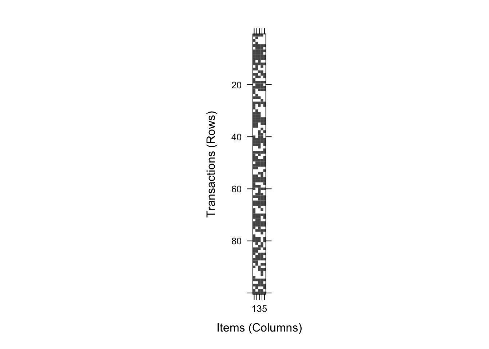
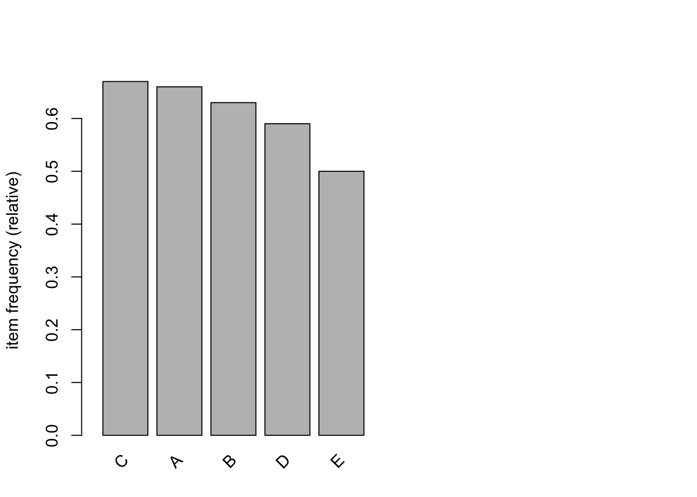

Chapter 29 Association rule mining in R
This lab activity is adapted from the following tutorials/guides: - Association mining (Market Basket Analysis) - Introduction to Association Rule Mining in R
In this lab activity, we will
- use the
arulespackage to perform association rule mining - load our transaction data from file (with the appropriate format for the
arulespackage)
29.1 Dependencies
We’ll use the following packages in this lab activity (you will need to install any that you do not already have installed):
library(tidyverse) # For data wrangling
library(arules) # Association rule mining algorithms/functions## Loading required package: Matrix##
## Attaching package: 'Matrix'## The following objects are masked from 'package:tidyr':
##
## expand, pack, unpack##
## Attaching package: 'arules'## The following object is masked from 'package:khroma':
##
## info## The following object is masked from 'package:dplyr':
##
## recode## The following objects are masked from 'package:base':
##
## abbreviate, writelibrary(arulesViz) # Contains visualizations for association rule mining29.2 Data preparation and inspection
In this lab, we’ll load our transaction data from file: transactions.dat, which you can download on blackboard or you can access it online here.
Before continuing on with loading these data, take a look at transactions.dat.
Notice that each line (after the first) contains a comma separated list of items.
Each line describes a single transaction.
For example, the line B,E,C describes a transaction containing the items B, C, and E.
We can use the read.transactions function from the arules package to read a our data file containing transactions.
# You will need to adjust the file path to run this lab activity locally.
transactions <- read.transactions(
"lecture-material/week-11/transactions.dat",
sep = ",",
skip = 1
)In your R console, run ?read.transactions to see more information about loading transaction data from file.
The arules packages provides some useful functions for inspecting our transaction data:
To view the different items represented across all transactions in your data, you can use the itemLabels function:
itemLabels(transactions)## [1] "A" "B" "C" "D" "E"To view the sizes of each transaction in our dataset, we can use the size function:
# "arules::" before calling the size function tells R that we want to use the
# size function provided by the arules package.
arules::size(transactions)## [1] 4 1 1 1 5 3 5 4 5 5 2 5 2 2 2 4 3 1 5 3 5 4 1 1 3 1 5 3 1 1 3 3 5 5 4 2 1
## [38] 2 2 3 5 5 4 1 1 5 2 3 5 4 5 2 1 2 3 5 5 2 3 4 1 3 5 3 5 5 1 2 1 5 4 2 5 5
## [75] 2 4 1 1 4 4 2 2 4 2 4 3 5 2 3 2 3 1 1 1 5 2 5 2 3 5If you wanted to get a list object containing all transactions, you could use the LIST function:
transaction_list <- LIST(transactions)
# For brevity, we'll just show the first few entries in the list we created.
head(transaction_list)## [[1]]
## [1] "A" "B" "C" "D"
##
## [[2]]
## [1] "B"
##
## [[3]]
## [1] "A"
##
## [[4]]
## [1] "B"
##
## [[5]]
## [1] "A" "B" "C" "D" "E"
##
## [[6]]
## [1] "B" "C" "D"The good old summary function works with transaction data, too:
summary(transactions)## transactions as itemMatrix in sparse format with
## 100 rows (elements/itemsets/transactions) and
## 5 columns (items) and a density of 0.61
##
## most frequent items:
## C A B D E (Other)
## 67 66 63 59 50 0
##
## element (itemset/transaction) length distribution:
## sizes
## 1 2 3 4 5
## 21 21 17 14 27
##
## Min. 1st Qu. Median Mean 3rd Qu. Max.
## 1.00 2.00 3.00 3.05 5.00 5.00
##
## includes extended item information - examples:
## labels
## 1 A
## 2 B
## 3 CThe arules package also provides the image function to visually inspect binary incidence matrices describing your data.
In most cases, you’ll have too many transactions for this to be a particularly useful visualization.
# look at all transactions
image(transactions)
The arules package also provides a quick function for visualizing the frequences of individual items in your transaction data:
itemFrequencyPlot(transactions, topN=10, cex.names=1)
In these data, we can see that C is the most frequent and E is the least frequent.
29.3 Generating association rules
The data provided in transactions.dat were generated randomly (for demonstrative purposes).
I.e., I wanted to show off a small example of transaction data formated in a way that works with the functions in the arules package.
Because these data were generated random, the association rules are not going to be particularly meaningful.
We can use the apriori function to generate association rules.
Run ?apriori in your R consolue for more information about using and parameterizing the apriori function.
rules <- apriori(
transactions,
parameter = list(
supp = 0.3, # Sets our minimum support threshold
conf = 0.5, # Sets our confidence threshold
minlen = 2, # Rules must have at least two items. Eliminates null rules.
target = "rules" # We'd like rules as our output.
)
)## Apriori
##
## Parameter specification:
## confidence minval smax arem aval originalSupport maxtime support minlen
## 0.5 0.1 1 none FALSE TRUE 5 0.3 2
## maxlen target ext
## 10 rules TRUE
##
## Algorithmic control:
## filter tree heap memopt load sort verbose
## 0.1 TRUE TRUE FALSE TRUE 2 TRUE
##
## Absolute minimum support count: 30
##
## set item appearances ...[0 item(s)] done [0.00s].
## set transactions ...[5 item(s), 100 transaction(s)] done [0.00s].
## sorting and recoding items ... [5 item(s)] done [0.00s].
## creating transaction tree ... done [0.00s].
## checking subsets of size 1 2 3 4 done [0.00s].
## writing ... [58 rule(s)] done [0.00s].
## creating S4 object ... done [0.00s].summary(rules)## set of 58 rules
##
## rule length distribution (lhs + rhs):sizes
## 2 3 4
## 20 30 8
##
## Min. 1st Qu. Median Mean 3rd Qu. Max.
## 2.000 2.000 3.000 2.793 3.000 4.000
##
## summary of quality measures:
## support confidence coverage lift
## Min. :0.3000 Min. :0.5758 Min. :0.320 Min. :0.9759
## 1st Qu.:0.3200 1st Qu.:0.7234 1st Qu.:0.400 1st Qu.:1.1890
## Median :0.3500 Median :0.7983 Median :0.465 Median :1.2819
## Mean :0.3671 Mean :0.7835 Mean :0.479 Mean :1.2927
## 3rd Qu.:0.4000 3rd Qu.:0.8563 3rd Qu.:0.590 3rd Qu.:1.3719
## Max. :0.4800 Max. :0.9375 Max. :0.670 Max. :1.7647
## count
## Min. :30.00
## 1st Qu.:32.00
## Median :35.00
## Mean :36.71
## 3rd Qu.:40.00
## Max. :48.00
##
## mining info:
## data ntransactions support confidence
## transactions 100 0.3 0.5
## call
## apriori(data = transactions, parameter = list(supp = 0.3, conf = 0.5, minlen = 2, target = "rules"))We can use the inspect function to display the association rules that we found:
inspect(rules)## lhs rhs support confidence coverage lift count
## [1] {E} => {D} 0.37 0.7400000 0.50 1.2542373 37
## [2] {D} => {E} 0.37 0.6271186 0.59 1.2542373 37
## [3] {E} => {B} 0.40 0.8000000 0.50 1.2698413 40
## [4] {B} => {E} 0.40 0.6349206 0.63 1.2698413 40
## [5] {E} => {A} 0.40 0.8000000 0.50 1.2121212 40
## [6] {A} => {E} 0.40 0.6060606 0.66 1.2121212 40
## [7] {E} => {C} 0.42 0.8400000 0.50 1.2537313 42
## [8] {C} => {E} 0.42 0.6268657 0.67 1.2537313 42
## [9] {D} => {B} 0.41 0.6949153 0.59 1.1030401 41
## [10] {B} => {D} 0.41 0.6507937 0.63 1.1030401 41
## [11] {D} => {A} 0.38 0.6440678 0.59 0.9758603 38
## [12] {A} => {D} 0.38 0.5757576 0.66 0.9758603 38
## [13] {D} => {C} 0.47 0.7966102 0.59 1.1889704 47
## [14] {C} => {D} 0.47 0.7014925 0.67 1.1889704 47
## [15] {B} => {A} 0.47 0.7460317 0.63 1.1303511 47
## [16] {A} => {B} 0.47 0.7121212 0.66 1.1303511 47
## [17] {B} => {C} 0.46 0.7301587 0.63 1.0897891 46
## [18] {C} => {B} 0.46 0.6865672 0.67 1.0897891 46
## [19] {A} => {C} 0.48 0.7272727 0.66 1.0854817 48
## [20] {C} => {A} 0.48 0.7164179 0.67 1.0854817 48
## [21] {D, E} => {B} 0.32 0.8648649 0.37 1.3728014 32
## [22] {B, E} => {D} 0.32 0.8000000 0.40 1.3559322 32
## [23] {B, D} => {E} 0.32 0.7804878 0.41 1.5609756 32
## [24] {D, E} => {A} 0.32 0.8648649 0.37 1.3104013 32
## [25] {A, E} => {D} 0.32 0.8000000 0.40 1.3559322 32
## [26] {A, D} => {E} 0.32 0.8421053 0.38 1.6842105 32
## [27] {D, E} => {C} 0.34 0.9189189 0.37 1.3715208 34
## [28] {C, E} => {D} 0.34 0.8095238 0.42 1.3720743 34
## [29] {C, D} => {E} 0.34 0.7234043 0.47 1.4468085 34
## [30] {B, E} => {A} 0.35 0.8750000 0.40 1.3257576 35
## [31] {A, E} => {B} 0.35 0.8750000 0.40 1.3888889 35
## [32] {A, B} => {E} 0.35 0.7446809 0.47 1.4893617 35
## [33] {B, E} => {C} 0.35 0.8750000 0.40 1.3059701 35
## [34] {C, E} => {B} 0.35 0.8333333 0.42 1.3227513 35
## [35] {B, C} => {E} 0.35 0.7608696 0.46 1.5217391 35
## [36] {A, E} => {C} 0.36 0.9000000 0.40 1.3432836 36
## [37] {C, E} => {A} 0.36 0.8571429 0.42 1.2987013 36
## [38] {A, C} => {E} 0.36 0.7500000 0.48 1.5000000 36
## [39] {B, D} => {A} 0.32 0.7804878 0.41 1.1825573 32
## [40] {A, D} => {B} 0.32 0.8421053 0.38 1.3366750 32
## [41] {A, B} => {D} 0.32 0.6808511 0.47 1.1539849 32
## [42] {B, D} => {C} 0.35 0.8536585 0.41 1.2741172 35
## [43] {C, D} => {B} 0.35 0.7446809 0.47 1.1820331 35
## [44] {B, C} => {D} 0.35 0.7608696 0.46 1.2896094 35
## [45] {A, D} => {C} 0.34 0.8947368 0.38 1.3354281 34
## [46] {C, D} => {A} 0.34 0.7234043 0.47 1.0960671 34
## [47] {A, C} => {D} 0.34 0.7083333 0.48 1.2005650 34
## [48] {A, B} => {C} 0.38 0.8085106 0.47 1.2067323 38
## [49] {B, C} => {A} 0.38 0.8260870 0.46 1.2516469 38
## [50] {A, C} => {B} 0.38 0.7916667 0.48 1.2566138 38
## [51] {A, D, E} => {C} 0.30 0.9375000 0.32 1.3992537 30
## [52] {C, D, E} => {A} 0.30 0.8823529 0.34 1.3368984 30
## [53] {A, C, E} => {D} 0.30 0.8333333 0.36 1.4124294 30
## [54] {A, C, D} => {E} 0.30 0.8823529 0.34 1.7647059 30
## [55] {A, B, E} => {C} 0.32 0.9142857 0.35 1.3646055 32
## [56] {B, C, E} => {A} 0.32 0.9142857 0.35 1.3852814 32
## [57] {A, C, E} => {B} 0.32 0.8888889 0.36 1.4109347 32
## [58] {A, B, C} => {E} 0.32 0.8421053 0.38 1.6842105 3229.3.1 Generating frequent itemsets
What if you just want to generate the set of frequent itemsets using the apriori algorithm?
You can use the apriori function to do that if you change the target parameter:
freq_itemsets <- apriori(
transactions,
parameter = list(
supp = 0.3, # Sets our minimum support threshold
minlen = 1, # Sets must have at least one item. Eliminates null sets.
target = "frequent itemsets"
)
)## Apriori
##
## Parameter specification:
## confidence minval smax arem aval originalSupport maxtime support minlen
## NA 0.1 1 none FALSE TRUE 5 0.3 1
## maxlen target ext
## 10 frequent itemsets TRUE
##
## Algorithmic control:
## filter tree heap memopt load sort verbose
## 0.1 TRUE TRUE FALSE TRUE 2 TRUE
##
## Absolute minimum support count: 30
##
## set item appearances ...[0 item(s)] done [0.00s].
## set transactions ...[5 item(s), 100 transaction(s)] done [0.00s].
## sorting and recoding items ... [5 item(s)] done [0.00s].
## creating transaction tree ... done [0.00s].
## checking subsets of size 1 2 3 4 done [0.00s].
## sorting transactions ... done [0.00s].
## writing ... [27 set(s)] done [0.00s].
## creating S4 object ... done [0.00s].summary(freq_itemsets)## set of 27 itemsets
##
## most frequent items:
## A C E B D (Other)
## 13 13 13 12 12 0
##
## element (itemset/transaction) length distribution:sizes
## 1 2 3 4
## 5 10 10 2
##
## Min. 1st Qu. Median Mean 3rd Qu. Max.
## 1.000 2.000 2.000 2.333 3.000 4.000
##
## summary of quality measures:
## support count
## Min. :0.3000 Min. :30.00
## 1st Qu.:0.3450 1st Qu.:34.50
## Median :0.3800 Median :38.00
## Mean :0.4207 Mean :42.07
## 3rd Qu.:0.4700 3rd Qu.:47.00
## Max. :0.6700 Max. :67.00
##
## includes transaction ID lists: FALSE
##
## mining info:
## data ntransactions support confidence
## transactions 100 0.3 1
## call
## apriori(data = transactions, parameter = list(supp = 0.3, minlen = 1, target = "frequent itemsets"))Again, we can use the inspect function from the arules package to see all of the frequent itemsets:
inspect(freq_itemsets)## items support count
## [1] {E} 0.50 50
## [2] {D} 0.59 59
## [3] {B} 0.63 63
## [4] {A} 0.66 66
## [5] {C} 0.67 67
## [6] {D, E} 0.37 37
## [7] {B, E} 0.40 40
## [8] {A, E} 0.40 40
## [9] {C, E} 0.42 42
## [10] {B, D} 0.41 41
## [11] {A, D} 0.38 38
## [12] {C, D} 0.47 47
## [13] {A, B} 0.47 47
## [14] {B, C} 0.46 46
## [15] {A, C} 0.48 48
## [16] {B, D, E} 0.32 32
## [17] {A, D, E} 0.32 32
## [18] {C, D, E} 0.34 34
## [19] {A, B, E} 0.35 35
## [20] {B, C, E} 0.35 35
## [21] {A, C, E} 0.36 36
## [22] {A, B, D} 0.32 32
## [23] {B, C, D} 0.35 35
## [24] {A, C, D} 0.34 34
## [25] {A, B, C} 0.38 38
## [26] {A, C, D, E} 0.30 30
## [27] {A, B, C, E} 0.32 3229.4 Exercises
- Adjust confidence and support thresholds used for rule generation. What happens if you decrease these thresholds? What about increase these threshold?
- Apply association rule mining to the Groceries dataset.
The Groceries dataset comes with
arulespackage. You can load it as follows:
data("Groceries")
grocery_trans <- Groceries- Describe a type of data that does not describe customer transactions that you could imagine applying association rule mining to. For example, how might you apply association rule mining to generate association rules for characters in a set of words? What other types of data might be useful to apply association rule mining to?